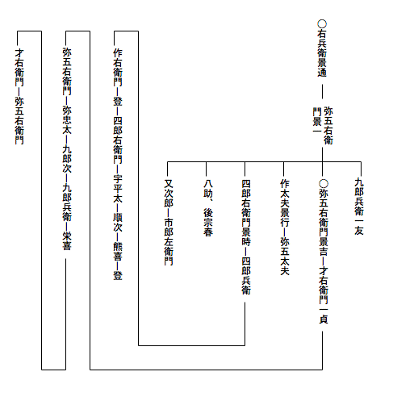

| 興津弥五右衛門の遺書 | |
| 森 鴎外 | |
| (2012) | |
興津弥五右衛門の遺書
森鷗外
某
儀明日年来の宿望
相達し候
て、妙解院殿
（松向寺殿）御墓前において首尾
よく切腹いたし候
事
と相成り候。しかれば子孫のため事の顚末
書き残しおきたく、京都なる弟又次郎宅において筆を取り候。
某
祖父
は興津右兵衛景通
と申
候
。永正
十一（十七）年駿河国
興津
に生れ、今川治部大輔
殿に仕え、同国清見
が関
に住居いたし候。永禄
三年五月二十日今川殿陣亡
遊ばされ候
時、景通
も御供
いたし候。年齢四十一歳に候。法名
は千山宗及居士
と申候。
父才八
は永禄元年出生候
て、三歳にして怙
を失い、母の手に養育いたされ候て人と成り候。壮年に及びて弥五右衛門景一
と名告
り、母の族なる播磨国
の人佐野官十郎
方に寄居いたしおり候。さてその縁故をもって赤松左兵衛督
殿に仕え、天正
九年千石を給わり候。十三年四月赤松殿阿波国
を併
せ領せられ候に及びて、景一
は三百石を加増せられ、阿波郡代
となり、同国渭津
に住居いたし、慶長
の初まで勤続いたし候
。慶長五年七月赤松殿石田三成
に荷担
いたされ、丹波国
なる小野木縫殿介
とともに丹後国
田辺城
を攻められ候。当時田辺城には松向寺
殿三斎忠興公
御立籠
り遊ばされおり候
ところ、神君上杉景勝
を討たせ給うにより、三斎公も随従遊ばされ、跡
には泰勝院殿幽斎藤孝
公御留守遊ばされ候。景一は京都赤松殿邸
にありし時、烏丸光広
卿と相識
に相成りおり候
。これは光広卿が幽斎公和歌の御弟子にて、嫡子
光賢
卿に松向寺殿の御息女万姫君
を妻
せ居られ候
故
に候。さて景一光広卿を介
して御当家御父子とも御心安く相成りおり候。田辺攻
の時、関東に御出
遊ばされ候三斎公は、景一が外戚
の従弟たる森三右衛門を使に田辺へ差立てられ候。森は田辺に着
いたし、景一に面会して御旨
を伝え、景一はまた赤松家の物頭
井門亀右衛門
と謀
り、田辺城の妙庵丸櫓
へ矢文
を射掛け候。翌朝景一は森を斥候の中に交ぜて陣所を出だし遣
り候。森は首尾よく城内に入り、幽斎公の御親書を得て、翌晩関東へ出立いたし候。この歳
赤松家滅亡せられ候により、景一は森の案内にて豊前国
へ参り、慶長六年御当家に召抱
えられ候
。元和
五年御当代光尚
公御誕生遊ばされ、御幼名六丸君
と申候。景一は六丸君御附
と相成り候。元和
七年三斎公御致仕
遊ばされ候時、景一も剃髪
いたし、宗也
と名告
り候。寛永
九年十二月九日御先代妙解院殿忠利公
肥後
へ御入国遊ばされ候時、景一も御供
いたし候。十八年三月十七日に妙解院殿卒去遊ばされ、次いで九月二日景一も病死いたし候。享年
八十四歳に候。
兄九郎兵衛一友
は景一が嫡子にして、父につきて豊前
へ参り、慶長十七年三斎公に召しいだされ、御次勤
仰
つけられ、後病気により外様勤
と相成り候。妙解院殿の御代
に至り、寛永十四年冬島原攻
の御供いたし、翌十五年二月二十七日兼田弥一右衛門
とともに、御当家攻口
の一番乗と名告り、海に臨める城壁の上にて陣亡いたし候。法名を義心英立居士
と申
候
。
某
は文禄
四（三）年景一が二男に生れ、幼名才助と申候。七歳の時父につきて豊前国小倉へ参り、慶長十七年十九歳にて三斎公に召しいだされ候。元和七年三斎公致仕遊ばされ候時、父も剃髪いたし候
えば、某二十八歳にて弥五右衛門景吉
と名告り、三斎公の御供いたし候て、豊前国興津に参り候。
寛永元年五月安南船
長崎に到着候時、三斎公は御薙髪
遊ばされ候てより三年目なりしが、御茶事
に御用
いなされ候珍らしき品買い求め候様仰
含められ、相役
横田清兵衛と両人にて、長崎へ出向き候。幸なる事には異なる伽羅
の大木渡来いたしおり候。然
るところその伽羅に本木
と末木
との二つありて、はるばる仙台より差下
され候伊達権中納言
殿の役人ぜひとも本木の方を取らんとし、某も同じ本木に望を掛け互にせり合い、次第に値段をつけ上
げ候。
その時横田申
候
は、たとい主命なりとも、香木
は無用の翫物
に有之
、過分の大金を擲
ち候
事
は不可然
、所詮
本木を伊達家に譲り、末木を買求めたき由
申候。某
申候は、某は左様には存じ申さず、主君の申つけられ候は、珍らしき品を買い求め参れとの事なるに、このたび渡来候
品の中にて、第一の珍物はかの伽羅に有之、その木に本末あれば、本木の方が尤物
中の尤物たること勿論
なり、それを手に入れてこそ主命を果すに当るべけれ、伊達家
の伊達を増長致
させ、本木を譲り候
ては、細川家の流
を瀆
す事と相成り申すべくと申候
。横田嘲笑
いて、それは力瘤
の入れどころが相違せり、一国一城を取るか遣
るかと申す場合ならば、飽
くまで伊達家に楯
をつくがよろしからん、高が四畳半の炉
にくべらるる木の切れならずや、それに大金を棄
てんこと存じも寄らず、主君御自身にてせり合われ候
わば、臣下として諫
め止
め申すべき儀
なり、たとい主君がしいて本木を手に入れたく思召
されんとも、それを遂げさせ申す事、阿諛便佞
の所為
なるべしと申候
。当時三十一歳の某
、この詞
を聞きて立腹致し候えども、なお忍んで申候は、それはいかにも賢人らしき申条
なり、さりながら某はただ主命と申
物
が大切なるにて、主君あの城を落せと仰
せられ候わば、鉄壁なりとも乗り取り申すべく、あの首を取れと仰せられ候わば、鬼神なりとも討ち果たし申すべくと同じく、珍らしき品を求め参れと仰せられ候えば、この上なき名物を求めん所存なり、主命たる以上は、人倫の道に悖
り候事は格別、その事柄に立入り候批判がましき儀は無用なりと申候。横田いよいよ嘲笑
いて、お手前とてもその通り道に悖
りたる事はせぬと申さるるにあらずや、これが武具などならば、大金に代
うとも惜しからじ、香木に不相応なる価
をいださんとせらるるは若輩
の心得ちがいなりと申候。某申候は、武具と香木との相違は某若輩ながら心得居る、泰勝院殿
の御代
に、蒲生
殿申され候
は、細川家には結構なる御道具あまた有之
由
なれば拝見に罷出
ずべしとの事なり、さて約束せられし当日に相成り、蒲生殿参られ候
に、泰勝院殿は甲冑
刀剣弓
鎗
の類を陳
ねて御見せなされ、蒲生殿意外に思
されながら、一応御覧あり、さて実は茶器拝見致したく参上したる次第なりと申され、泰勝院殿御笑いなされ、先きには道具と仰
せられ候故、武家の表道具を御覧に入れたり、茶器ならば、それも少々持合せ候とて、はじめて御取
り出
しなされし由、御当家におかせられては、代々武道の御心掛深くおわしまし、かたがた歌道茶事までも堪能
に渡らせらるるが、天下に比類なき所ならずや、茶儀は無用の虚礼なりと申さば、国家の大礼、先祖の祭祀
も総
て虚礼なるべし、我等
この度
仰を受けたるは茶事に御用に立つべき珍らしき品を求むる外
他事なし、これが主命なれば、身命に懸
けても果さでは相成らず、貴殿が香木に大金を出す事不相応なりと思され候
は、その道の御心得なき故
、一徹に左様思わるるならんと申候。横田聞きも果てず、いかにも某は茶事の心得なし、一徹なる武辺者
なり、諸芸に堪能なるお手前の表芸が見たしと申すや否や、つと立ち上がり、脇差
を抜きて投げつけ候。某は身をかわして避
け、刀は違棚
の下なる刀掛に掛けありし故、飛びしざりて刀を取り抜き合せ、ただ一打に横田を討ち果たし候。
かくて某は即時に伽羅
の本木を買い取り、仲津
へ持ち帰り候。伊達家の役人は是非
なく末木を買い取り、仙台へ持ち帰り候。某は香木を三斎公に参らせ、さて御願い申候は、主命大切と心得候ためとは申ながら、御役
に立つべき侍
一人討ち果たし候段、恐れ入り候えば、切腹仰附
けられたくと申候。三斎公聞召
され、某に仰せられ候はその方が申条一々もっとも至極
せり、たとい香木は貴
からずとも、この方
が求め参れと申しつけたる珍品
に相違なければ大切と心得候事当然なり、総て功利の念を以
て物を視
候
わば、世の中に尊
き物は無くなるべし、ましてやその方が持ち帰り候伽羅は早速焚
き試み候に、希代
の名木なれば「聞く度に珍らしければ郭公
いつも初音
の心地
こそすれ」と申す古歌に本
づき、銘を初音とつけたり、かほどの品を求め帰り候事天晴
なり、ただし討
たれ候
横田清兵衛が子孫遺恨
を含
みいては相成らずと仰せられ候。かくて直ちに清兵衛が嫡子を召され、御前において盃
を申付けられ、某は彼者
と互に意趣を存ずまじき旨
誓言
いたし候。しかるに横田家の者どもとかく異志を存する由相聞え、ついに筑前国
へ罷越
し候
。某へは三斎公御名忠興
の興
の字を賜
わり、沖津を興津と相改め候
様
御沙汰
有之候。
これより二年目、寛永三年九月六日
主上
二条の御城
へ行幸遊ばされ妙解院殿へかの名香を御所望有之
すなわちこれを献
ぜらるる、主上叡感
有りて「たぐひありと誰
かはいはむ末
匀
ふ秋より後のしら菊の花」と申す古歌の心にて、白菊と名附
けさせ給
由
承り候。某が買い求め候香木、畏
くも至尊の御賞美を被
り、御当家の誉
と相成り候事、存じ寄らざる儀
と存じ、落涙候事に候。
その後某は御先代妙解院殿よりも出格の御引立を蒙
り、寛永九年御国替
の砌
には、三斎公の御居城八代
に相詰
め候事と相成り、あまつさえ殿御上京の御供にさえ召具
せられ候
。しかるところ寛永一四年島原征伐の事有之
候。某をば妙解院殿御弟君中務少輔殿立孝公
の御旗本
に加えられ御幟
を御預けなされ候。十五年二月廿二日御当家御攻口
にて、御幟を一番に入れ候時、銃丸左の股
に中
り、ようよう引き取り候。その時某四十五歳に候。手創
平癒
候て後、某は十六年に江戸詰
仰つけられ候
。
寛永十八年妙解院殿存じ寄らざる御病気にて、御父上に先立
、御卒去遊ばされ、当代肥後守殿光尚
公の御代
と相成り候。同年九月二日には父弥五右衛門景一死去いたし候。次いで正保
二年三斎公も御卒去遊ばされ候。これより先
き寛永十三年には、同じ香木の本末を分けて珍重なされ候仙台中納言殿さえ、少林城
において御薨去
なされ候
。かの末木の香は「世の中の憂きを身に積む柴舟
やたかぬ先よりこがれ行
らん」と申す歌の心にて、柴舟と銘し、御珍蔵なされ候由に候。
某
つらつら先考御当家に奉仕
候
てより以来の事を思うに、父兄ことごとく出格の御引立を蒙
りしは言うも更
なり、某一身に取りては、長崎において相役横田清兵衛を討ち果たし候時、松向寺殿一命を御救助下され、この再造
の大恩ある主君御卒去遊ばされ候に、某いかでか存命いたさるべきと決心いたし候。
先年妙解院殿御卒去の砌
には、十九人の者ども殉死
いたし、また一昨年松向寺殿御卒去の砌にも、簑田平七正元
、小野伝兵衛友次
、久野与右衛門宗直
、宝泉院勝延行者
の四人直ちに殉死いたし候。簑田は曾祖父
和泉
と申す者相良遠江守
殿の家老にて、主とともに陣亡し、祖父若狭
、父牛之助流浪
せしに、平七は三斎公に五百石にて召し出
されしものに候。平七は二十三歳にて切腹し、小姓
磯部長五郎介錯
いたし候。小野は丹後国にて祖父今安太郎左衛門
の代
に召し出されしものなるが、父田中甚左衛門
御旨
に忤
い、江戸御邸より逐電
したる時、御近習
を勤めいたる伝兵衛に、父を尋ね出して参れ、もし尋ね出さずして帰り候わば、父の代りに処刑いたすべしと仰
せられ、伝兵衛諸国を遍歴せしに廻り合わざる趣にて罷
り帰り候。三斎公その時死罪を顧みずして帰参候は殊勝なりと仰せられ候て、助命遊ばされ候。伝兵衛はこの恩義を思候
て、切腹いたし候。介錯
は磯田
十郎に候。久野は丹後の国において幽斎公に召し出され、田辺御籠城
の時功ありて、新知
百五十石賜
わり候者に候。矢野又三郎介錯いたし候。宝泉院は陣貝吹
の山伏
にて、筒井順慶
の弟石井備後守吉村
が子に候
。介錯は入魂
の山伏の由に候。
某
はこれ等
の事を見聞
候
につけ、いかにも羨
ましく技癢
に堪
えず候
えども、江戸詰御留守居の御用残りおり、他人には始末相成りがたく、空
しく月日の立つに任せ候。然
るところ松向寺殿御遺骸
は八代なる泰勝院にて荼毗
せられしに、御遺言
により、去年正月十一日泰勝院専誉御遺骨
を京都へ護送いたし候。御供には長岡河内景則
、加来作左衛門家次
、山田三右衛門、佐方源左衛門秀信
、吉田兼庵
相立ち候。二十四日には一同京都に着し、紫野大徳寺
中高桐院
に御納骨いたし候。御生前において同寺清巌和尚
に御約束有之
候趣に候。
さて今年御用相片づき候えば、御当代に宿望言上いたし候
に、已
みがたき某が志を御聞届け遊ばされ候
［＃ルビの「そろ」は底本では「それ」］
。十月二十九日朝御暇乞
に参り、御振舞
に預り、御手
ずから御茶を下され、引出物
として九曜の紋
赤裏の小袖二襲
を賜
わり候。退出候後、林外記
殿、藤崎作左衛門殿を御使として遣
され後々の事心配致
すまじき旨
仰
せられ、御歌を下され、又京都へ参らば、万事古橋小左衛門と相談して執り行えと懇
に仰せられ候。その外堀田加賀守
殿、稲葉能登守
殿も御歌
を下され候。十一月二日江戸出立の時は、御当代の御使として田中左兵衛殿品川まで見送られ候。
当地に着
候
てよりは、当家の主人たる弟又次郎の世話に相成り候。ついては某相果て候後、短刀を記念
に遣
し候。
餞別
として詩歌
を贈られ候
人々は烏丸大納言資慶
卿、裏松宰相資清
卿、大徳寺清巌和尚、南禅寺、妙心寺、天竜寺、相国寺、建仁寺、東福寺並
びに南都興福寺の長老達に候。
明日切腹候場所は、古橋殿取計
にて、船岡山
の下に仮屋を建て、大徳寺門前より仮屋まで十八町の間、藁筵
三千八百枚余を敷き詰め、仮屋の内には畳一枚を敷き、上に白布を覆
い有之
候
由
に候。いかにも晴がましく候て、心苦しく候えども、これまた主命なれば是非なく候
。立会
は御当代の御名代
谷内蔵之允
殿、御家老長岡与八郎殿、同半左衛門殿にて、大徳寺清巌実堂和尚も臨場
せられ候。倅
才右衛門も参るべく候。介錯はかねて乃美市郎兵衛勝嘉
殿に頼みおき候。
某法名
は孤峰不白
と自選いたし候
。身不肖
ながら見苦しき最期も致すまじく存じおり候。
この遺書は倅才右衛門宛
にいたしおき候えば、子々孫々相伝
え、某が志を継ぎ、御当家に奉対
、忠誠を擢
ずべく候。
正保
四年丁亥
十二月朔日
興津弥五右衛門景吉華押
興津才右衛門殿
正保四年十二月二日、興津弥五右衛門景吉は高桐院
の墓に詣
でて、船岡山
の麓
に建てられた仮屋に入った。畳の上に進んで、手に短刀を取った。背後
に立っている乃美
市郎兵衛の方を振り向いて、「頼む」と声を掛けた。白無垢
の上から腹を三文字に切った。乃美は項
を一刀切ったが、少し切り足りなかった。弥五右衛門は「喉笛
を刺されい」と云った。しかし乃美が再び手を下さぬ間に、弥五右衛門は絶息した。
仮屋の周囲には京都の老若男女が堵
の如
くに集って見物した。落首の中に「比類なき名をば雲井に揚げおきつやごゑを掛けて追腹
を切る」と云うのがあった。
興津家の系図は大略左の通りである。

弥五右衛門景吉
の嫡子
才右衛門一貞
は知行二百石を給
わって、鉄砲三十挺頭
まで勤めたが、宝永元年に病死した。右兵衛景通
から四代目である。五世弥五右衛門は鉄砲十挺頭まで勤めて、元文
四年に病死した。六世弥忠太は番方
を勤め、宝暦
六年に致仕
した。七世九郎次は番方を勤め、安永五年に致仕した。八世九郎兵衛は養子で、番方を勤め、文化元年に病死した。九世栄喜
は養子で、番方を勤め、文政九年に病死した。十世弥忠太は栄喜の嫡子で、後才右衛門と改名し、番方を勤め、万延
元年に病死した。十一世弥五右衛門は才右衛門の二男で、後宗也
と改名し、犬追物
が上手
であった。明治三年に番士にせられていた。
弥五右衛門景吉の父景一 ［＃ルビの「かげかず」は底本では「かげかす」］ には男子が六人あって、長男が九郎兵衛一友 で、二男が景吉であった。三男半三郎は後作太夫景行 と名告 っていたが、慶安五年に病死した。その子弥五太夫が寛文十一年に病死して家が絶えた。景一の四男忠太は後四郎右衛門景時と名告った。元和元年大阪夏の陣に、三斎公に従って武功を立てたが、行賞の時思う旨があると云って辞退したので追放せられた。それから寺本氏に改めて、伊勢国 亀山 に往 って、本多下総守俊次 に仕えた。次いで坂下 、関、亀山三箇所の奉行 にせられた。寛政（永）十四年の冬、島原の乱に西国の諸侯が江戸から急いで帰る時、細川越中守綱利 と黒田右衛門佐光之 とが同日に江戸を立った。東海道に掛かると、人馬が不足した。光之は一日だけ先へ乗り越した。この時寺本四郎右衛門［＃「四郎右衛門」は底本では「四郎兵衛」］ が京都にいる弟又次郎の金を七百両借りて、坂下、関、亀山三箇所の人馬を買い締めて、山の中に隠して置いた。さて綱利の到着するのを待ち受けて、その人馬を出したので、綱利は土山水口の駅で光之を乗り越した。綱利は喜んで、後に江戸にいた四郎右衛門の二男四郎兵衛を召 し抱 えた。四郎兵衛の嫡子作右衛門は五人扶持 二十石を給わって、中小姓 組に加わって、元禄四年に病死した。作右衛門の子登 は越中守宣紀 に任用せられ、役料共七百石を給わって、越中守宗孝 の代に用人を勤めていたが、元文三年に致仕した。登の子四郎右衛門［＃「四郎右衛門」は底本では「四郎兵衛」］ は物奉行 を［＃「物奉行 を」は底本では「物奉作 を」］ 勤めているうちに、寛延三年に旨に忤 って知行宅地を没収せられた。その子宇平太 は始め越中守重賢 の給仕を勤め、後に中務大輔治年 の近習 になって、擬作高 百五十石を給わった。次いで物頭列 にせられて紀姫 附になった。文化二年に致仕した。宇平太の嫡子順次は軍学、射術に長じていたが、文化五年に病死した。順次の養子熊喜 は実は山野勘左衛門の三男で、合力米 二十石を給わり、中小姓を勤め、天保八年に病死した。熊喜の嫡子衛一郎は後四郎右衛門と改名し、玉名郡代を勤め、物頭列 にせられた。明治三年に鞠獄大属 になって、名を登と改めた。景一の五男八助は三歳の時足を傷 けて行歩 不自由になった。宗春 と改名して寛文十二年に病死した。景一の六男又次郎は京都に住んでいて、播磨国 の佐野官十郎の孫市郎左衛門を養子にした。
底本：「カラー版日本文学全集7
森鷗外」河出書房新社
１９６９（昭和44
）年3
月30
日初版発行
初出：「中央公論」
１９１２（大正元）年10
月
※人名の修正箇所は、「山椒大夫・高瀬舟・阿部一族」（角川文庫、1967）を参照しました。
入力：土屋隆
校正：川山隆
２００８年3
月24
日作成
青空文庫作成ファイル：
このファイルは、インターネットの図書館、青空文庫（http://www.aozora.gr.jp/）で作られました。入力、校正、制作にあたったのは、ボランティアの皆さんです。